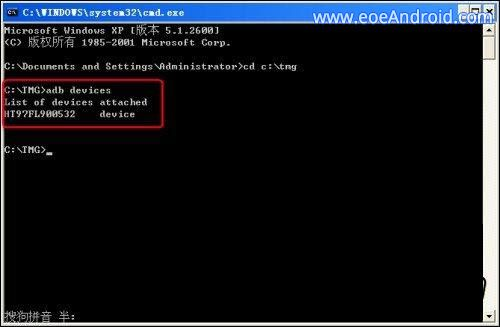
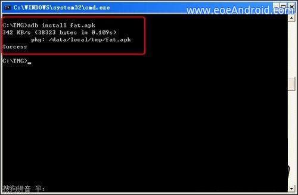
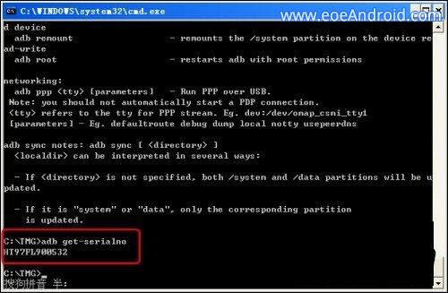

Android Debug Bridge操作命令详解
ADB 的全称为Android Debug Bridge，就是起到调试桥的作用。通过adb我们可以在Eclipse中方面通过DDMS来调试Android程序，说白了就是debug工具。adb的工作方式比较特殊，采用监听Socket TCP 5554等端口的方式让IDE和Qemu通讯，默认情况下adb会daemon相关的网络端口，所以当我们运行Eclipse时adb进程就会自动运行。
1.安装USB驱动
这个相关步骤其实笔者已经在Android前系列教程中介绍，故今天简要叙述一下过程。进入设置-应用程序-开发-USB调试，将第一个选项打钩选中。然后通过USB线连接电脑，提示安装驱动。如果是32位的系统选择x86文件夹安装驱动，如果是64位系统选择amd64文件夹。
2.软件准备
将提供的软件工具包中的TMG文件夹，放到C盘根目录下。之所以放于此不是指定位置，只是为了后续在MS-DOS中进入文件夹带来方便。文件夹路径：C:\TMG\
3.操作命令
查看设备：
adb devices
这个命令是查看当前连接的设备, 连接到计算机的android设备或者模拟器将会列出显示；

安装软件：
adb installadb install :这个命令将指定的apk文件安装到设备上；

卸载软件：
adb uninstall <软件名>adb uninstall -k <软件名>
如果加 -k 参数,为卸载软件但是保留配置和缓存文件。
进入设备或模拟器的shell：
adb shell
通过上面的命令，就可以进入设备或模拟器的shell环境中，在这个Linux Shell中，你可以执行各种Linux的命令，另外如果只想执行一条shell命令，可以采用以下的方式：
adb shell [command]如：adb shell dmesg会打印出内核的调试信息。
发布端口：
可以设置任意的端口号，做为主机向模拟器或设备的请求端口。
如：adb forward tcp:5555 tcp:8000
从电脑上发送文件到设备：
adb push <本地路径> <远程路径>
用push命令可以把本机电脑上的文件或者文件夹复制到设备(手机)
从设备上下载文件到电脑：
adb pull <远程路径> <本地路径>
用pull命令可以把设备(手机)上的文件或者文件夹复制到本机电脑
查看bug报告：
adb bugreport
记录无线通讯日志：
一般来说，无线通讯的日志非常多，在运行时没必要去记录，但我们还是可以通过命令，设置记录：
adb shelllogcat -b radio
获取设备的ID和序列号：
adb get-productadb get-serialno
adb shell
sqlite3
